第7回
湖を渡る長い橋は、同じ形の橋脚と梁のくり返しで、1本ずつが荷重を受けもっている。
歌川広重『近江八景』の一図（『瀬田夕照』と思われるが、題は目視による推定）／Public domain／Wikimedia Commons（1834年ごろ）
2026-10-27／講義資料「第7回」（教科書 3.4節 p.41〜44、図3.19〜3.21、練習問題 3・4）の範囲。部材を三角形に組んだ骨組み——トラス——の、どの棒にどれだけの力が働くかを求める。使う道具は新しいものではなく、これまで使ってきた力の釣合いである。今回の目標は、①「なぜ各部材の力が棒に沿った1つの値になるのか」を導き、②その値を節点法と切断法の2つで求め、③どちらを使うかを選べるようになることである。
draft/check_07.py：節点ごとの釣合い式をすべて立てて numpy で解く）で再計算し、すべて一致することを確かめてある。小型移動マニピュレータの腕を、ふつうの箱形の太い棒ではなく、細い棒を三角形に組んだ骨組みに置き換えると、腕の質量を大きく減らしながら、曲げに強いままにできる（講義資料 p.2 は「アームの質量を 30〜50 % 程度に低減（設計による）」と書いている）。では、その骨組みのどの棒に、何ニュートンの力が、引っ張る向き・押す向きのどちらで働くのか。これを知らなければ、棒の太さも、つなぎ方も、決められない。
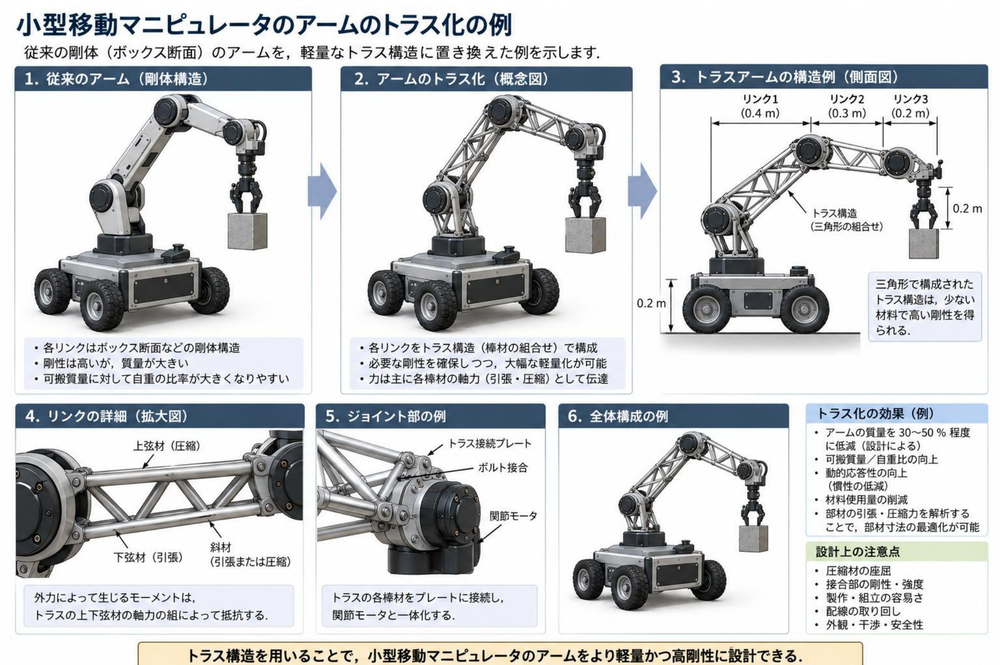
講義資料が挙げた今日のポイントは次の3つ。
以下、まず「トラスとは何か」（1章）を、仮定から力が棒に沿うことまで導き、次に2つの解法（2・3章）、最後にロボットアームの数値例（4章）と演習（5章）に進む。
動機：棒を1本、壁から横に突き出して先に荷物を吊るすと、棒の付け根に大きな曲げが働く。同じ荷物を、棒を三角形に組んだ骨組みで支えると、各棒には「引っ張られるか、押されるか」しか働かない。曲げを考えずに済み、材料も少なくて済む。これが橋・クレーン・鉄塔・ロボットアームでトラスが使われる理由である。
トラスの問題を「解く」とは、次の2つを求めることである（スライド p.7）。
そのために、次の仮定を置く（スライド p.4。空欄は、前後の式と教科書から埋めた〔推定〕）。
| 仮定 | 意味 | なぜ置くか |
|---|---|---|
| ① 部材は剛体（変形しない） | 棒は伸び縮み・曲がりを無視する | 節点の位置を変えずに釣合いを書くため |
| ② 部材は軽い（重さを無視） | 部材の自重は荷重に比べて小さいとして0とする | 部材の途中に力が作用しなくなる |
| ③ 荷重は節点に作用 | 外力は、節点（と支点）にしか加えない | 〃 |
| ④ 滑らかなピンで結合 | 節点まわりに自由に回転でき、モーメントを伝えない（モーメント＝0） | 節点に力しか働かないようにするため |
PHOTO 1｜現実
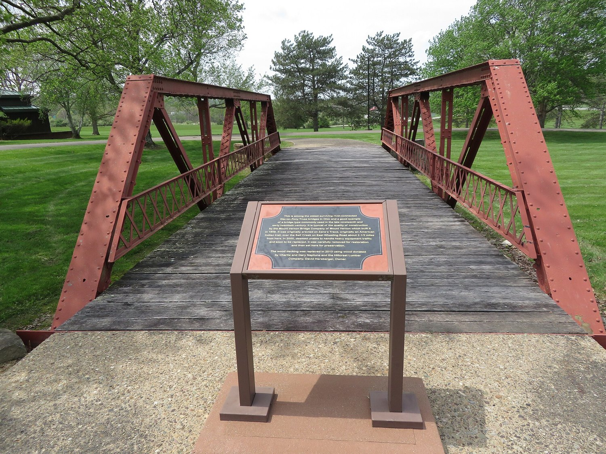
三角形を連ねたワーレン型のトラス橋では、斜材が引張と圧縮を交互に受けもつ。
Kreuz und quer／CC0／Wikimedia Commons（オハイオ州の国道博物館のトラス橋、2025年撮影）
MITATE 1｜見立て
六角形と三角形の骨組みは、薄い膜を空に張ったまま保っている。
Rob Young／CC BY 2.0／Wikimedia Commons（エデン・プロジェクトのバイオーム、2013年撮影）
節点法も切断法も、「各部材の力は、棒に沿った向きで、大きさが1つ」という事実の上に立っている。これは仮定から導ける。
STEP 1 部材 AB を、両端の節点から切り離して FBD を描く。仮定②③より、部材の途中に外力はない。仮定④（滑らかなピン）より、節点は部材に力しか及ぼさない（モーメントは伝えない）。したがって部材に働く力は、A に働く力 $\boldsymbol F_A$ と B に働く力 $\boldsymbol F_B$ の2つだけ。〔なぜこの図を描くか：釣合いは「注目する物体に働く力の全部」で書くので、まず働く力が何個かを数える〕
STEP 2 部材は静止しているので、力の釣合い（$\sum\boldsymbol F=\boldsymbol 0$）より $$\boldsymbol F_A+\boldsymbol F_B=\boldsymbol 0\ \Longrightarrow\ \boldsymbol F_B=-\boldsymbol F_A$$ 2つの力は大きさが等しく、逆向き。〔2つしかないので、足して0になるには逆向きの同じ大きさしかない〕
STEP 3 次に、A まわりのモーメントの釣合いを書く。$\boldsymbol F_A$ は A を通るので、A まわりのモーメントは 0。残る $\boldsymbol F_B$ のモーメント（腕は線分 AB の長さ $L$、力の AB に垂直な成分を $F_{B\perp}$ とする）は $L\,F_{B\perp}$。釣合いより $$L\,F_{B\perp}=0\ \Longrightarrow\ F_{B\perp}=0$$ 〔$L\ne0$ なので、$F_B$ の AB に垂直な成分が 0。つまり $\boldsymbol F_B$ は棒に沿っている〕
STEP 4 STEP 2 より $\boldsymbol F_A=-\boldsymbol F_B$ も棒に沿う。以上より、2つの力は同じ作用線（棒そのもの）上にあり、大きさが等しく逆向き。$\blacksquare$
この定理のおかげで、1本の部材の力は1つの数 $F$（大きさ）と、引くか押すかの区別（符号）だけで表せる。節点法の「釣合い式は2本」という性質も、切断法で「切り口の力は棒に沿った1つの未知数」としてよいことも、ここから来る。
二力部材の2つの力が、棒の外向きなら棒は引っ張られている（引張）、内向きなら押されている（圧縮）。計算では、1つの文字 $F$ で表し、次の約束を最初に宣言する。
すべての内力を最初から「引張」と仮定して矢印を描き、解いた $F$ の符号で判定する方式にすると、記号がそろう。講義資料の表（p.9）もこの内容である。
| 仮定 | 計算結果の符号 | 部材の内力 |
|---|---|---|
| 引張り | ＋ | 引張 |
| − | 圧縮 | |
| 圧縮 | ＋ | 圧縮 |
| − | 引張 |
斜めの部材の力 $F$ を、$x$、$y$ の成分に分けて釣合い式に入れる。角度が分からなくても、節点の座標から求められる。部材が節点 $\mathrm P(x_1,y_1)$ から $\mathrm Q(x_2,y_2)$ へ向かうとし、$\Delta x=x_2-x_1$、$\Delta y=y_2-y_1$、長さ $L=\sqrt{\Delta x^2+\Delta y^2}$ とする。P が部材から受ける力の大きさを $F$（引張を正）とすると、その向きは P→Q なので、 $$F_x=F\cos\theta=F\,\frac{\Delta x}{L},\qquad F_y=F\sin\theta=F\,\frac{\Delta y}{L}\qquad(1.1)$$
解きたい量（未知数）の数と、立てられる釣合い式の数を数えておく。トラスの部材の数を $m$、支点反力の成分の数を $r$（ピンは2、ローラーは1）、節点の数を $j$ とする。
等しければ未知数と式の数が合い、釣合い式だけで全部が決まる（静定）。$m+r>2j$ なら式が足りず、釣合いだけでは解けない（不静定、材料のたわみまで考える必要がある。今回は扱わない）。$m+r<2j$ なら、骨組みがつぶれる（不安定）。
次のトラスで $m$、$r$、$j$ を数え、静定かどうか判定せよ。(a) 図3.20（三角形、A がピン、C がローラー）。(b) 図3.21（5節点、7部材、C がピン、D がローラー）。
解答：(a) $j=3$（A、B、C）、$m=3$（AB、BC、AC）、$r=2+1=3$。$m+r=6=2j$ ✓ 静定。(b) $j=5$、$m=7$（AB、AE、BE、BC、EC、ED、CD）、$r=3$。$m+r=10=2j$ ✓ 静定。
確かめ：三角形を1つ足すと、節点が1つと部材が2つ増える（$j\to j+1$、$m\to m+2$）ので、$m+r=2j$ が保たれる。トラスが三角形の組合せで作られる理由もここにある（三角形は変形しない最小の形）。
動機：1.2 で、各部材の力は棒に沿った1つの数 $F$ だとわかった。では、その $F$ をどうやって決めるか。決め手は節点を1つ取り出すことである。節点は静止しているので、そこに集まる力（各部材から受ける力＋外力＋支点反力）は釣合っている。
節点法の特徴（スライド p.8。空欄は1.2・1.5から確定できるので、推定ではなく導出として書く）：
図のトラスの全部材に生じる力と、支点 A（ピン）、C（ローラー）における支持力を求めよ。B に右向きの力 500 N が作用する。AB＝AC＝1 m（AB は鉛直、AC は水平）。
解答
① 系と仮定：全部材を引張と仮定し、$F_{AB}$、$F_{BC}$、$F_{AC}$ とする。反力は、A のピンが $R_{Ax}$（$+x$ 向き）、$R_{Ay}$（$+y$ 向き）、C のローラーが $R_C$（$+y$ 向き）と仮定する（講義資料 p.11「おすすめ」）。
② 座標：右を $+x$、上を $+y$。各節点の FBD は次のとおり（講義資料の図）。
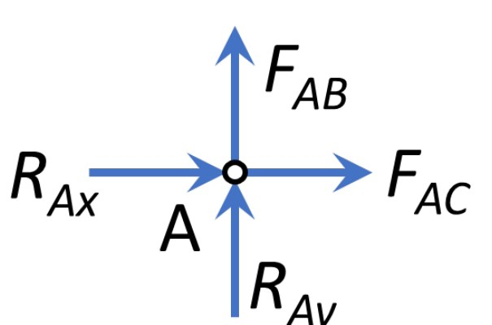
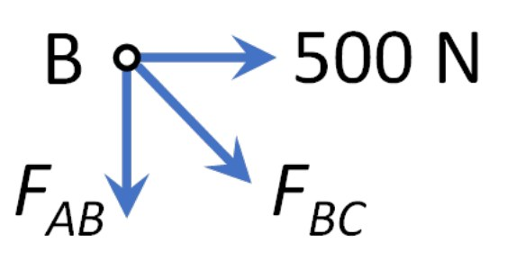
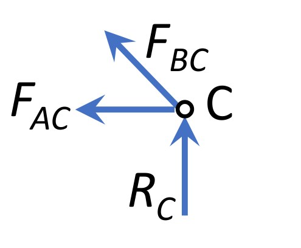
各節点の未知数の数：A は $F_{AB},F_{AC},R_{Ax},R_{Ay}$ の4個、B は $F_{AB},F_{BC}$ の2個、C は $F_{BC},F_{AC},R_C$ の3個。解けるのは B だけなので、B から始める。
③④⑤ 節点 B：B から C へ向かう単位ベクトルは $(1,-1)/\sqrt2$（1.4 より）、B から A へは $(0,-1)$。B が部材から受ける力は $F_{BC}(1,-1)/\sqrt2$ と $F_{AB}(0,-1)$、外力は $(500,0)$。 $$x:\ 500+\frac{F_{BC}}{\sqrt2}=0\ \Rightarrow\ F_{BC}=-500\sqrt2=-707.1\ \text{N}$$ $$y:\ -\frac{F_{BC}}{\sqrt2}-F_{AB}=0\ \Rightarrow\ F_{AB}=-\frac{F_{BC}}{\sqrt2}=500\ \text{N}$$ 〔$x$ の式から $F_{BC}$ が先に決まり、それを $y$ の式に入れて $F_{AB}$ が決まる〕
節点 C（$F_{BC}$ が既知になった）：C から B へ向かう単位ベクトルは $(-1,1)/\sqrt2$、C から A へは $(-1,0)$。 $$x:\ -\frac{F_{BC}}{\sqrt2}-F_{AC}=0\ \Rightarrow\ F_{AC}=-\frac{-707.1}{\sqrt2}=500\ \text{N}$$ $$y:\ \frac{F_{BC}}{\sqrt2}+R_C=0\ \Rightarrow\ R_C=500\ \text{N}$$
節点 A（$F_{AB}$、$F_{AC}$ が既知）：A から B へは $(0,1)$、A から C へは $(1,0)$。 $$x:\ F_{AC}+R_{Ax}=0\ \Rightarrow\ R_{Ax}=-500\ \text{N},\qquad y:\ F_{AB}+R_{Ay}=0\ \Rightarrow\ R_{Ay}=-500\ \text{N}$$
⑥ 答：$F_{AB}=500$ N（引張）、$F_{BC}=707$ N（圧縮）、$F_{AC}=500$ N（引張）。$R_{Ax}=500$ N（左向き）、$R_{Ay}=500$ N（下向き）、$R_C=500$ N（上向き）。
⑤ 検算（トラス全体の釣合い）：$x$：$500+R_{Ax}=500-500=0$ ✓。$y$：$R_{Ay}+R_C=-500+500=0$ ✓。A まわりのモーメント：B の力 500 N（右向き、A から高さ 1 m）は時計回りに $500\times1$、$R_C$（C は A から右へ 1 m）は反時計回りに $500\times1$。$-500+500=0$ ✓。符号の物理的な確認：B が部材から受ける力は、BC が $(-500,+500)$（B を左上へ押し返す＝圧縮）、AB が $(0,-500)$（B を下へ引き戻す＝引張）で、荷重 $(500,0)$ との合計が 0 になる ✓。
講義資料 p.13 の別解。トラス全体の釣合いから、先に反力を求める。未知数は $R_{Ax}$、$R_{Ay}$、$R_C$ の3個なので、式は3本必要。
力の釣合い：$x$：$500+R_{Ax}=0\Rightarrow R_{Ax}=-500$ N。$y$：$R_{Ay}+R_C=0$。
A まわりのモーメントの釣合い：$-500\times1+R_C\times1=0\Rightarrow R_C=500$ N。よって $R_{Ay}=-500$ N。
次に節点 A（外力は反力 $(-500,-500)$）：$x$：$F_{AC}-500=0$、$y$：$F_{AB}-500=0$ より $F_{AB}=F_{AC}=500$ N（ともに引張）。あとは節点 B または C の釣合いから $F_{BC}=707$ N（圧縮）。
確かめ：先の答えと一致 ✓。
節点法では、節点を見ただけで「この棒の力は0」と分かる場合がある。この棒を零力部材（zero-force member）という（資料にはない追加。標準的な教科書に必ず出てくる）。2つの形がある。
STEP 1 (a) T字。一直線の2本を $x$ 軸方向にとる。3本目は $x$ 軸と角 $\varphi\ne0$ をなし、力は $F_3$。STEP 2 節点の釣合いのうち、$x$ に垂直な方向（$y$ 方向）の式を書く。一直線の2本の力は $y$ 成分をもたず（棒が $x$ 軸に沿っているので）、外力もない。残るのは3本目だけ：$F_3\sin\varphi=0$。〔なぜ $y$ 方向の式を選ぶか：未知数の多い2本が現れず、$F_3$ だけの式になるから〕STEP 3 $\sin\varphi\ne0$ なので $F_3=0$。$\blacksquare$
STEP 4 (b) L字。部材1に垂直な方向の式：部材2の力 $F_2$ の成分 $F_2\sin\varphi=0$（部材1の力はこの方向に成分をもたず、外力もない）。$\sin\varphi\ne0$ より $F_2=0$。次に部材1に沿う方向の式：$F_1+F_2\cos\varphi=0$ で $F_2=0$ だから $F_1=0$。$\blacksquare$
図のトラス（A(0,0)、B(2,0)、C(4,0)、D(2,2) 〔m〕）は、A がピン、C がローラーで支えられ、頂点 D に鉛直下向きの力 $P$ が作用する。5本の部材（AB、BC、BD、AD、CD）の内力を求めよ。
解答
① 全部引張と仮定。反力はピン A が $R_{Ax}$、$R_{Ay}$、ローラー C が $R_C$（すべて $+$ 向き）。
② 全体の釣合い：$x$：$R_{Ax}=0$（水平の外力はない）。A まわりのモーメント：$-P\times2+R_C\times4=0\Rightarrow R_C=P/2$。$y$：$R_{Ay}+R_C-P=0\Rightarrow R_{Ay}=P/2$。
③ 零力部材の判定：節点 B には AB、BC、BD の3本が集まり、AB と BC は一直線（$x$ 軸上）。B には外力も反力もない。T字なので $F_{BD}=0$（図の破線）。〔節点 B の $y$ 方向：$F_{BD}=0$ と直接書ける〕
④ 節点 A：A から B へ $(1,0)$、A から D へ $(1,1)/\sqrt2$。
$$y:\ \frac{F_{AD}}{\sqrt2}+\frac P2=0\ \Rightarrow\ F_{AD}=-\frac{P}{\sqrt2}=-0.7071P,\qquad x:\ F_{AB}+\frac{F_{AD}}{\sqrt2}=0\ \Rightarrow\ F_{AB}=\frac P2$$
節点 B（$F_{BD}=0$）：$x$：$-F_{AB}+F_{BC}=0$ より $F_{BC}=P/2$。
節点 D で対称性から $F_{CD}=F_{AD}$。確かめ（節点 D の $y$ 方向）：D から A へは $(-1,-1)/\sqrt2$、D から C へは $(1,-1)/\sqrt2$ なので、D が部材から受ける $y$ 成分は $-\dfrac{F_{AD}+F_{CD}}{\sqrt2}=-\dfrac{-1.4142P}{\sqrt2}=+P$（上向き）。外力 $-P$（下向き）と釣合う ✓。
⑥ 答：$F_{AB}=F_{BC}=\dfrac P2$（引張）、$F_{AD}=F_{CD}=\dfrac{P}{\sqrt2}\approx0.707P$（圧縮）、$F_{BD}=0$（零力）。
draft/truss07.py）はこの方法を使い、講義資料と外部問題のすべての値を確かめた。ただし、手計算では「どの節点から始めるか」を考える節点法のほうが、見通しがよく、検算もしやすい。PHOTO 2｜現実
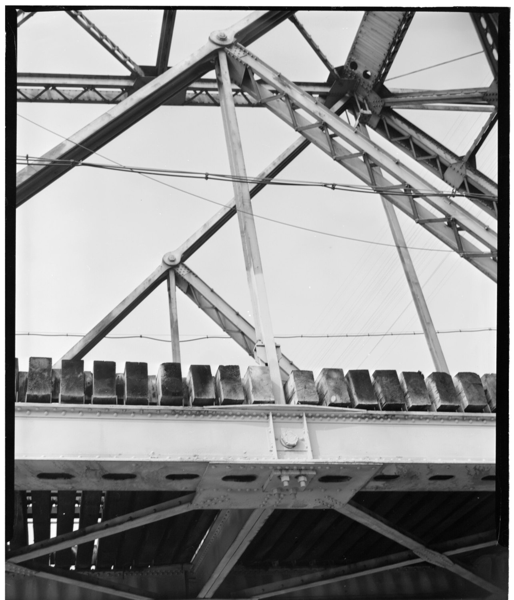
トラスの節点では、何本もの部材が1本のピンに集まり、力が1点で釣合う。
C. N. Beasley（HAER／米国歴史的技術記録）／Public domain／Wikimedia Commons（旋回橋のトラスの節点、1980年撮影。下端の黒帯を切除）
MITATE 2｜見立て
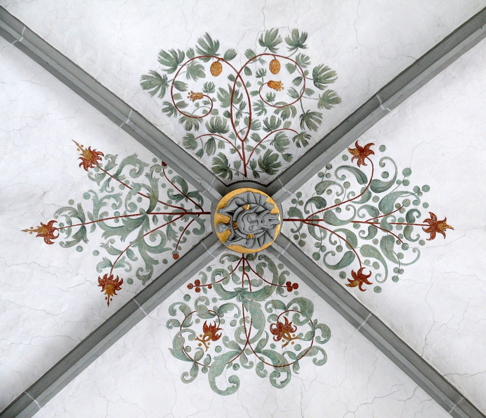
4本のリブが1つの要石に集まるとき、石の重さはその一点で受け渡される。
Roman Eisele／CC BY-SA 4.0／Wikimedia Commons（ムルハルトの教会の交差ヴォールト、2013年撮影）
節点法は確実だが、知りたい部材が離れた場所にあると、そこへたどり着くまで多くの節点を順に解かなければならない。講義資料 p.14 の例で、赤丸の3本の力だけが知りたいとしよう。
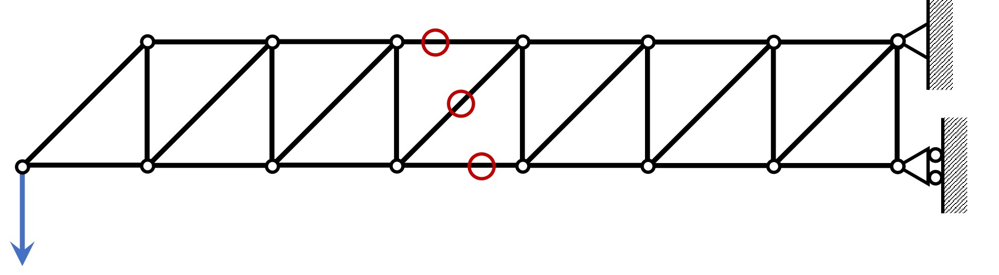
節点法で解くなら、荷重のある左端の節点から、右へ向かって節点を1つずつ（未知数2個以下の節点を探しながら）解き進め、赤丸の部材にたどり着く必要がある。その間、求めたくない部材の力も全部計算する。そこで、求めたい部材を通るように、トラスを切る。
STEP 1 切り取った部分に含まれる各節点は静止している。各節点について、そこに働く力（各部材から受ける力＋外力＋反力）の和は 0。〔節点法の式そのもの〕
STEP 2 これらの式を、切り取った部分のすべての節点について足し合わせる。切り取った部分の内側の部材は、両端の節点が両方ともこの部分に含まれる。その部材が両端に及ぼす力は、作用・反作用の法則（1.2）で大きさが等しく逆向き。足すと打ち消し合う。〔なぜ足すか：内側の力を消して、外から来る力だけを残すため〕
STEP 3 打ち消されずに残るのは、外力・反力と、切り口で切られた部材の力（切られた部材の一端だけがこの部分に含まれる）。したがって、それらの力の合力が 0。モーメントについても、各節点で「力の和＝0」なので、任意の点まわりのモーメントの和も 0。これを全節点で足すと、内側の部材の2つの力は同じ作用線上で逆向き（1.2）なので、モーメントも打ち消し合う。残るのは外力・反力・切り口の力のモーメントで、その和が 0。$\blacksquare$
要するに、切った部分を「1つの物体」として FBD を描くだけである。切った部材の力は、1.2 の二力部材の結果から、棒に沿った1つの未知数として描ける。
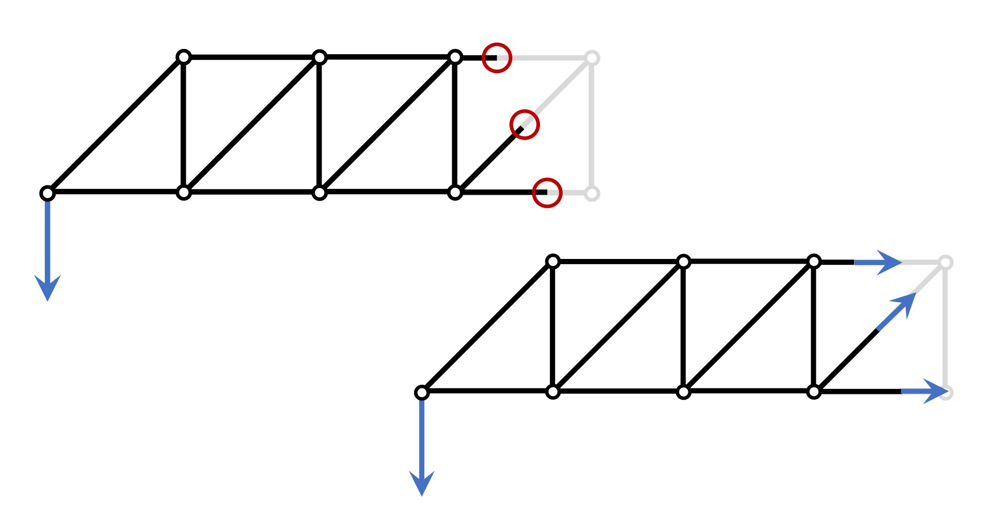
講義資料 p.15 の空欄「切断された［部分］でも釣合いが成立⇒解ける ↑ ［内力］の作用による」は、この意味である〔推定〕。
注1：何本まで切れるか（スライド p.17）。切った部分に立てられる釣合い式は、力が2本・モーメントが1本の最大3本。未知数が3より多ければ解けない。だから切断できるのは3箇所（3本）までである。〔空欄の「3」は、平面の剛体の釣合い式の数から確定できる〕
注2：どちらの部分を使うか（スライド p.18）。支点反力など未知の外力を含む側を選ぶと、未知数が 3 を超える（＝解けない）ことが多い。そこで、既知の外力（荷重）だけを含む側を選ぶ。ただし、先にトラス全体の釣合いから支点反力を求めておけば、どちらの部分を選んでも解ける。
注3：モーメントの点をうまく選ぶ（スライド p.19）。未知の力の作用線が交わる点（力が多く集まる点）まわりのモーメントの釣合いを使うとよい。その点を通る力はモーメントを生まないので、未知数が1つだけの式ができ、直ちに解が求まる。2本の未知力が平行なら、それに垂直な方向の力の釣合いを使う。
図のトラス（節点 A(0,0)、E(1,0)、D(2,0)、B(1,1)、C(2,1)〔m〕、BE と CD は鉛直、AB と EC は 45°）で、A に鉛直下向き 1000 N が作用する。C と D は壁で支持されている。部材 BC、EC、ED に生じる力を、切断法で求めよ。
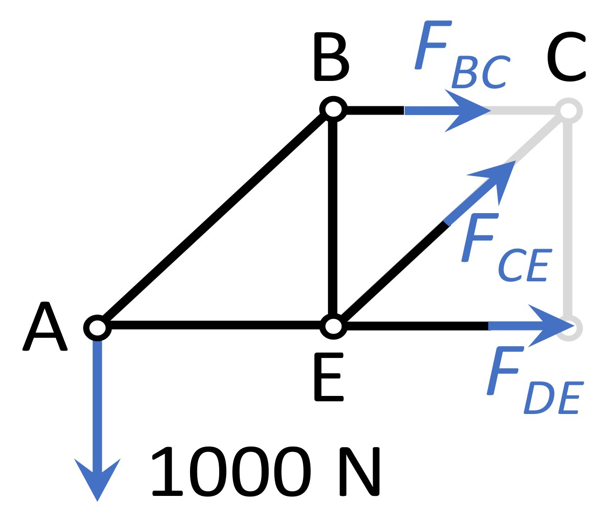
解答（講義資料 p.21「おすすめ」）
① 切断：BC、EC、ED の3本を通る鉛直線で切る（3本、注1 ✓）。
② どちらの部分：左の部分（A、B、E を含む）。〔荷重 1000 N（既知）だけを含み、反力（C、D の未知）を含まない。注2 ✓〕
③ 力の仮定：切り口の3本はすべて引張と仮定し、$F_{BC}$、$F_{EC}$、$F_{ED}$ を、切り口から外向き（右向き、EC は右上向き）に描く。
④⑤ 釣合い（反時計回りを正とし、各点まわりのモーメントを取る）。
E まわり（$F_{EC}$、$F_{ED}$ は E を通るのでモーメント 0。残るのは $F_{BC}$ と 1000 N）：1000 N の腕は E の鉛直線から左へ 1 m、$F_{BC}$ の腕は E から上へ 1 m（作用線 BC は E より 1 m 上）。1000 N は E のまわりを反時計回り（A が E の左で、下向きの力）、$F_{BC}$（右向き、E より上）は時計回り：
$$1\times1000-1\times F_{BC}=0\ \Rightarrow\ F_{BC}=1000\ \text{N（引張）}$$
C まわり（$F_{BC}$、$F_{EC}$ は C を通る。残るのは $F_{ED}$ と 1000 N）：1000 N の腕は C から水平に 2 m、$F_{ED}$ の腕は C から下へ 1 m。1000 N は C のまわりを反時計回り、$F_{ED}$（右向き、C より下）も反時計回り：
$$2\times1000+1\times F_{ED}=0\ \Rightarrow\ F_{ED}=-2000\ \text{N（圧縮）}$$
〔C は切断法の対象部分（左側）に含まれない点だが、モーメントの基準点にはどの点を選んでもよい。EC と BC が通る点を選ぶと未知数が1つの式になる〕
$y$ 方向の力の釣合い（水平の $F_{BC}$、$F_{ED}$ は $y$ 成分がない）：
$$F_{EC}\sin45°-1000=0\ \Rightarrow\ F_{EC}=\frac{1000}{\sin45°}=1414\ \text{N（引張）}$$
⑥ 答：$F_{BC}=1000$ N（引張）、$F_{EC}=1414$ N（引張）、$F_{ED}=2000$ N（圧縮）。
確かめ：連立なしで3本とも1つの式から求められた（注3 の効果）。講義資料の補足：符号は「正→引張、負→圧縮」と一貫しているので、仮定した向きとの照合が不要で、手間が少ない。教科書の解答は BC、EC を引張、ED を圧縮と予想した向きで仮定していて、ここでも「お勧めしない」とされている（引張・圧縮の混在、p.20）。
図のトラスは、A がピン、D がローラーで支えられ、下辺中央の E に鉛直下向きの力 $P$ が作用する。AE＝ED＝$L$。三角形はすべて正三角形（AB、BC、CD、BE、CE も長さ $L$、B・C の高さ $\frac{\sqrt3}{2}L$）。部材 AB、AE と支点 D に作用する力を求めよ。
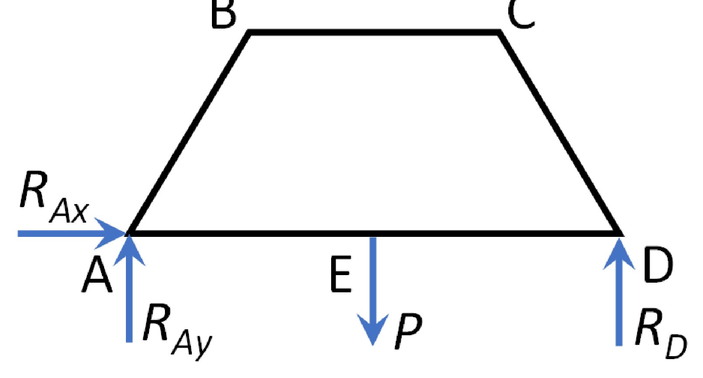
解答
0. 共通：トラス全体の釣合い（反力）：
$x$：$R_{Ax}=0$。$y$：$R_{Ay}-P+R_D=0$。A まわりのモーメント（E は A から $L$、D は $2L$）：$-LP+2L\,R_D=0$。
$$\therefore\ R_D=\frac P2,\qquad R_{Ax}=0,\qquad R_{Ay}=\frac P2$$
(a) 節点法：全部材を引張と仮定。A から B へ $(\cos60°,\sin60°)$、A から E へ $(1,0)$。節点 A の外力は反力 $(0,\,P/2)$（上向き）。
$$x:\ F_{AB}\cos60°+F_{AE}=0,\qquad y:\ F_{AB}\sin60°+\frac P2=0$$
$y$ の式から $F_{AB}=-\dfrac{P}{2\sin60°}=-\dfrac{P}{\sqrt3}$。$x$ の式から $F_{AE}=-F_{AB}\cos60°=\dfrac{P}{2\sqrt3}$。
答：$F_{AB}=\dfrac{\sqrt3}{3}P$（圧縮）、$F_{AE}=\dfrac{\sqrt3}{6}P$（引張）、$R_D=\dfrac P2$（上向き）。
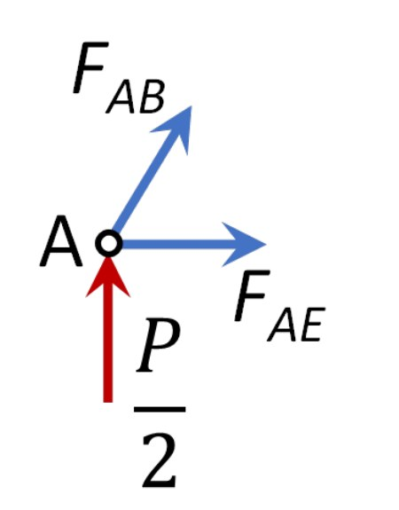
(b) 切断法（AB と AE を切って節点 A を1つの部分として切り出す。切った2本の内力は引張として外向きに描く）：E まわりのモーメント（$F_{AE}$ は E を通るので消える。$R_{Ax}=0$ は腕 0）：
$$-L\cdot\frac P2-L\,F_{AB}\sin60°=0\ \Rightarrow\ F_{AB}=-\frac{P}{2\sin60°}=-\frac{P}{\sqrt3}$$
〔$R_{Ay}$ は A（E の左 $L$）で上向きなので時計回り。$F_{AB}$ の鉛直成分も A で上向き（引張なら）で、同じ向きに効く〕。次に $x$ の力の釣合い：$F_{AE}+F_{AB}\cos60°=0\Rightarrow F_{AE}=\dfrac{P}{2\sqrt3}$。
答：節点法と一致。
(c) 別の切り方（AE だけを1本ずつ知りたいとき）：BC、BE、AE の3本を通る線で切り、左の部分（A、B）を取る。B まわりのモーメントで、BC と BE は B を通って消える。残るのは $R_{Ay}$（B から水平に $\frac L2$ だけ左、上向き）と $F_{AE}$（B から下へ $\frac{\sqrt3}{2}L$、右向き）： $$-\frac L2\cdot\frac P2+\frac{\sqrt3}{2}L\,F_{AE}=0\ \Rightarrow\ F_{AE}=\frac{P}{2\sqrt3}=\frac{\sqrt3}{6}P\ \text{（引張）}$$ 1本の式で、他の部材を計算せずに $F_{AE}$ が求まった。これが切断法の強みである。
確かめ：(a)(b)(c) の3通りが一致 ✓。節点 E の $y$：BE、CE の鉛直成分 $\frac{\sqrt3}{3}P\sin60°\times2=P$（引張で E を上へ引く）が荷重 $P$ と釣合う ✓。
| 節点法 | 切断法 | |
|---|---|---|
| 釣合いの対象 | 1つの節点（共点力） | 切った部分（剛体） |
| 使える式 | $\sum F_x=\sum F_y=0$（2本） | $\sum F_x=\sum F_y=\sum M=0$（3本） |
| 未知数の上限 | 1節点あたり2個 | 切る部材は3本まで |
| 得意 | 全部材の力を求める／反力側から順に解ける | 特定の1〜3本だけを求める／連立が不要 |
| 苦手 | 求めたい棒が遠い（途中の棒も全部解く） | 全部材を求めるには何度も切る／反力が必要な場合がある |
| 検算 | 最後の節点の式、全体の釣合い | 別の点まわりのモーメント、節点法 |
PHOTO 3｜現実
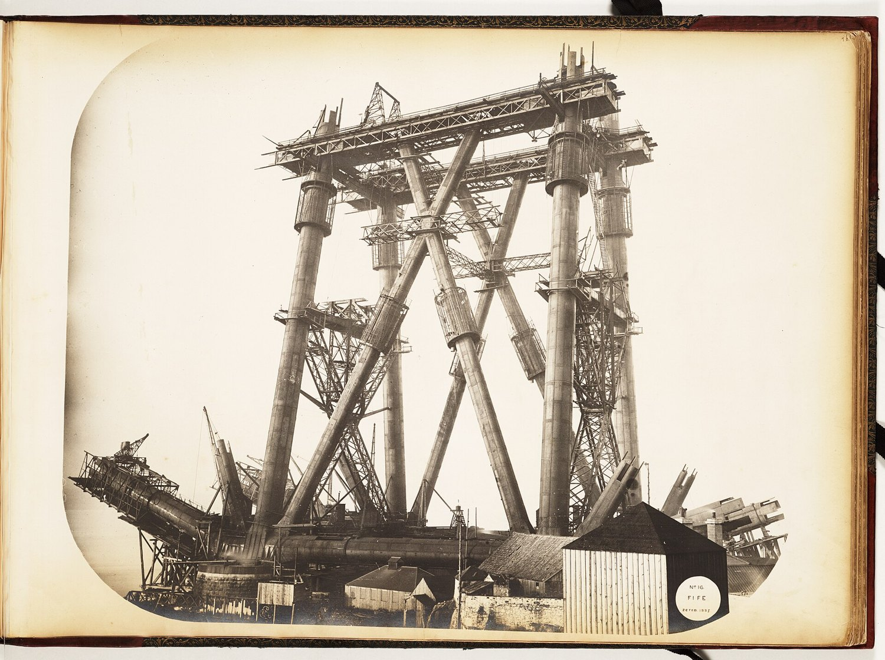
建設中のフォース橋は、柱と斜材を三角形に組み上げて、空へ張り出していく。
Philip Phillips／Public domain／Wikimedia Commons（フォース橋のファイフ側カンチレバー、1887年2月撮影）
MITATE 3｜見立て
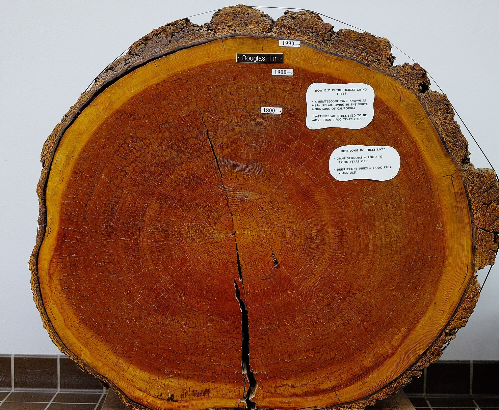
丸太を切ると、外から見えなかった内側の年輪が、切り口に現れる。
Mr. Satterly／CC0／Wikimedia Commons（ダグラスファーの丸太の断面、2019年撮影（周辺を切除））
序で見た小型移動マニピュレータの腕を、今回の道具で解析する。講義資料 p.2 は「外力によって生じるモーメントは、トラスの上下弦材の軸力の組によって抵抗する」と書いている（下図）。これを、数値で確かめる。
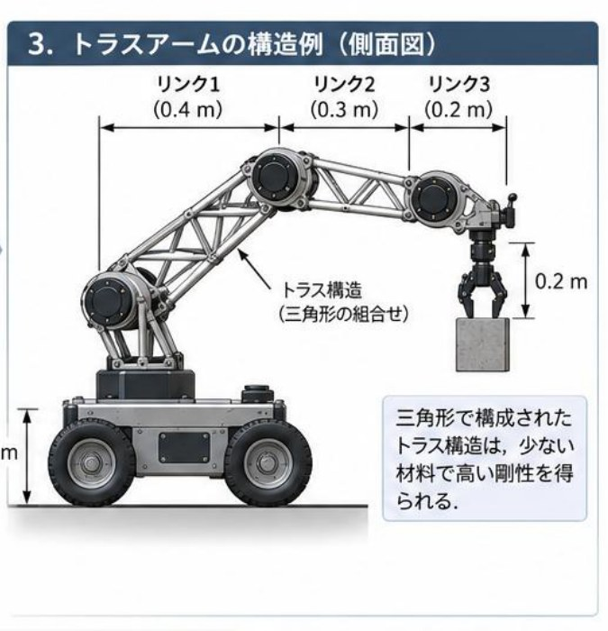
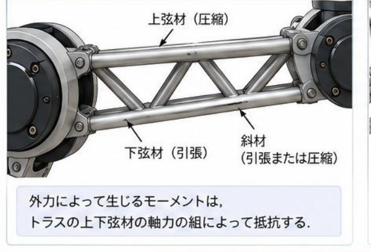
リンク1（長さ 0.4 m）を、図のような平面トラスで近似する。節点は A(0, 0)、B(0.2, 0)、C(0.4, 0)、D(0, 0.1)、E(0.2, 0.1)〔m〕。腕の付け根（ジョイントの板）に、A がピン、D が水平方向の力だけを受けるローラーで取り付けられている（反力は $R_{Ax}$、$R_{Ay}$、$R_{Dx}$）。部材は AB、BC、DE、AD、BE、AE、EC の7本。先端 C に、質量 5 kg の物体をつかんで水平に保つ。$g=9.8\ \mathrm{m/s^2}$、部材の自重は無視する。各部材の内力と、付け根の反力を求めよ。
解答
① 荷重 $W=5\times9.8=49$ N（C に下向き）。部材は全部引張と仮定する。
② 座標：右を $+x$、上を $+y$。
③ 全体の釣合い（付け根の反力）：
$$x:\ R_{Ax}+R_{Dx}=0,\qquad y:\ R_{Ay}-49=0\ \Rightarrow\ R_{Ay}=49\ \text{N}$$
A まわりのモーメント（D は A の真上 0.1 m で、水平力 $R_{Dx}$ の腕は 0.1 m。荷重の腕は 0.4 m）：
$$-0.1\,R_{Dx}-0.4\times49=0\ \Rightarrow\ R_{Dx}=-196\ \text{N（左向き）},\ R_{Ax}=+196\ \text{N（右向き）}$$
④ 切断法（節点 B と E の間、$x=0.1$ m で DE、AE、AB の3本を切る。右の部分は荷重 49 N だけを含み、反力を含まない。注2 ✓）：
⑤ 節点法で残りを求める。節点 B：AB と BC は一直線で、B に荷重はない。T字なので BE は零力（2.3）。BC は AB と同じ $x$ 方向の釣合い：$F_{BC}=F_{AB}=-98$ N（圧縮）。節点 C：EC は E から C へ向かい、C から見て左上向き $(-0.894,\,0.447)$。$y$：$0.4472F_{EC}-49=0\Rightarrow F_{EC}=109.6$ N（引張）。$x$：$-F_{BC}-0.894\times109.6=98-98=0$ ✓。節点 D：DE（引張 196 N、右向き）と反力 $R_{Dx}$（左向き 196 N）で水平方向が釣合い、鉛直の AD は零力（T字）。
⑥ 答：$F_{DE}=196$ N（引張）、$F_{AB}=F_{BC}=98$ N（圧縮）、$F_{AE}=110$ N（圧縮）、$F_{EC}=110$ N（引張）、$F_{AD}=F_{BE}=0$。反力：$R_{Ax}=196$ N（右）、$R_{Ay}=49$ N（上）、$R_{Dx}=196$ N（左）。
確かめ：全節点の連立方程式を数値で解いた結果（check_07.py）と一致 ✓。節点 E の釣合い：E が部材から受ける力は、ED 方向（E から D へ $(-1,0)$）に 196 N、EA 方向（E から A へ $(-0.894,-0.447)$）に $-109.6$ N すなわち $(+98,+49)$、EC 方向（E から C へ $(0.894,-0.447)$）に $+109.6$ N すなわち $(+98,-49)$、BE は 0。合計 $(-196+98+98,\ 49-49)=(0,0)$ ✓。
荷重 49 N が先端（付け根から 0.4 m）にあるので、付け根にはモーメント $M=0.4\times49=19.6$ N·m が働く。1本の細い棒なら、これは棒を曲げる（大きな曲げ応力が出る）。トラスでは、このモーメントを、上弦 DE の引張 $T$ と 下弦の圧縮 $C$ の偶力として受ける。
本例では $T=19.6/0.1=196$ N（DE）で、計算結果と一致する。下弦 AB の 98 N は、E まわりの区間では腕が半分（荷重の腕が 0.2 m）のためで、モーメントが先端に近いほど小さいことによる（$M$ は荷重から測った距離に比例する）。
| 弦材の間隔 $h$ [m] | 付け根の弦材の力 $M/h$ [N] |
|---|---|
| 0.05 | 392 |
| 0.10（本例） | 196 |
| 0.20 | 98 |
間隔を大きくするほど弦材の力は小さくなる。つまり、腕を「厚く」（弦材を離して）すれば、細い棒で大きなモーメントを支えられる。トラスが軽くて強い理由は、材料を、断面の中心ではなく離れた2本の弦材に集める点にある。
PHOTO 4｜現実
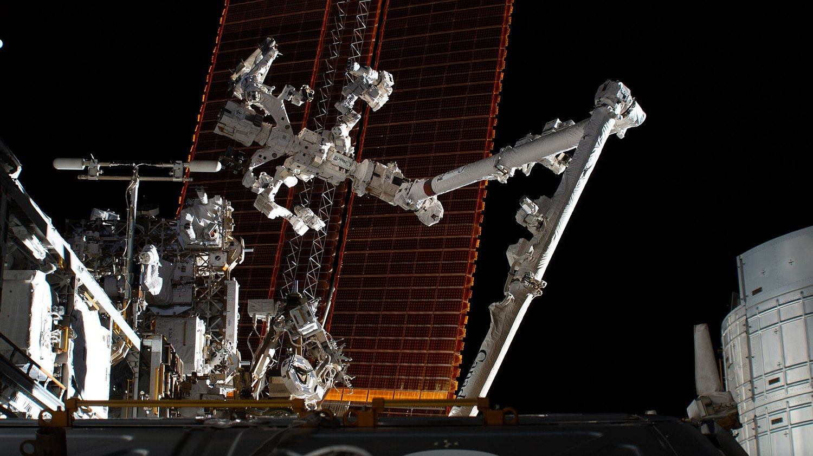
国際宇宙ステーションのロボットアームは、トラスの上に取り付けられて荷物を動かす。
NASA／Public domain／Wikimedia Commons（カナダアーム2とデクスター、2021年撮影）
MITATE 4｜見立て
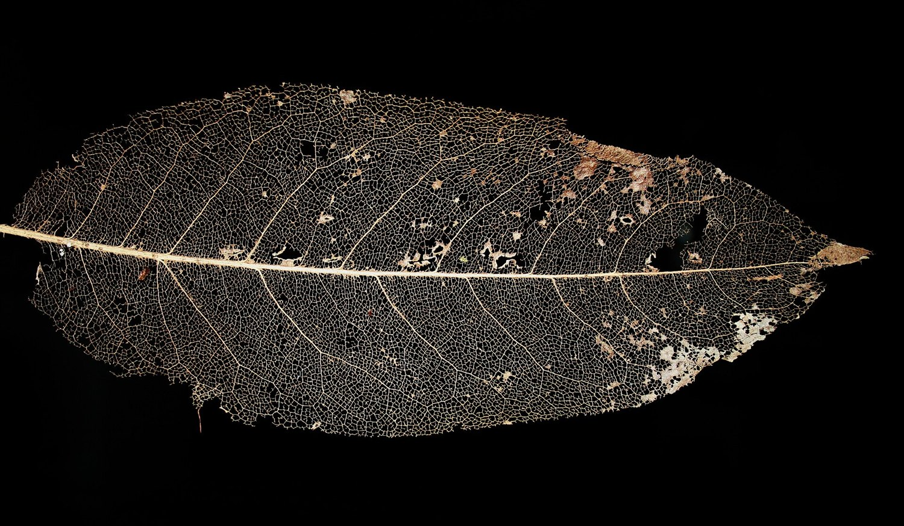
葉は、肉を失っても、主脈と側脈の網だけで形を保つ。
Brocken Inaglory／CC BY-SA 3.0／Wikimedia Commons（葉の骨格標本、2007年撮影）
図のように、鉛直な壁の点 P（高さ 0.8 m）と点 Q（高さ 0 m）に、棒 BP と棒 BQ がピンで取り付けられている。BQ は水平で長さ 0.6 m。点 B に鉛直下向きの力 500 N がかかる。BP、BQ の内力を求め、引張か圧縮かを答えよ。
解答：① B 以外の節点は壁なので、解くのは節点 B だけ（未知数2個）。BP は B から P へ向かう単位ベクトルが $(-0.6,\,0.8)$（長さ $\sqrt{0.6^2+0.8^2}=1.0$ m）、BQ は $(-1,\,0)$。引張を仮定する。
④⑤ $x$：$-0.6\,F_{BP}-F_{BQ}=0$、$y$：$0.8\,F_{BP}-500=0$。
$y$ より $F_{BP}=500/0.8=625$ N。$x$ より $F_{BQ}=-0.6\times625=-375$ N。
⑥ 答：BP は 625 N（引張）、BQ は 375 N（圧縮）。
確かめ：$m=2$、$r=4$（P と Q のピンが各2）、$j=3$ で $m+r=6=2j$ ✓。B の釣合い：$(-0.6\times625+375,\ 0.8\times625-500)=(0,0)$ ✓。直感とも合う：吊られた B を斜めの棒が引き上げ、水平の棒が（壁側へ引かれる B を）押し返している。
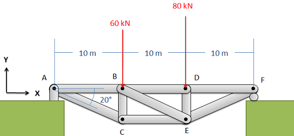
図の橋のトラスは、A がピン、F がローラーで支えられ、B に 60 kN、D に 80 kN の鉛直下向きの力がかかる。A-B、B-D、D-F の間隔はそれぞれ 10 m。AC と BE、EF の傾きは水平から 20°。(1) 反力と全部材の力を節点法で求めよ。(2) 部材 BD、BE、CE の力を切断法で求め、(1) と比べよ。
出典：Moore ほか, Mechanics Map, 5.3 Method of Joints 例題1／5.4 Method of Sections 例題1（CC 表示・継承。5.3、5.4）。公式解答と照合済み。公式の手書き解答は $\tan20°=0.364$ の丸めで下2桁が異なる（BD は 201.49、本教材は厳密値 201.48）。
解答
幾何：C は B の真下、E は D の真下で、A から $10\tan20°=3.640$ m 下。AC の単位ベクトル（A→C）は $(\cos20°,-\sin20°)=(0.9397,-0.3420)$。
反力（全体）：A まわり：$-60\times10-80\times20+R_F\times30=0\Rightarrow R_F=73.33$ kN。$y$：$R_{Ay}=140-73.33=66.67$ kN。$x$：$R_{Ax}=0$。
(1) 節点法（全部引張と仮定）。節点 A（AB は $(1,0)$、AC は $(0.9397,-0.3420)$、反力 $(0,66.67)$）：
$y$：$-0.3420\,F_{AC}+66.67=0\Rightarrow F_{AC}=194.92$ kN（引張）。$x$：$F_{AB}+0.9397\times194.92=0\Rightarrow F_{AB}=-183.17$ kN（圧縮）。
節点 C（CA は $(-0.9397,0.3420)$、CB は $(0,1)$、CE は $(1,0)$）：$x$：$-0.9397\times194.92+F_{CE}=0\Rightarrow F_{CE}=183.17$ kN（引張）。$y$：$0.3420\times194.92+F_{BC}=0\Rightarrow F_{BC}=-66.67$ kN（圧縮）。
節点 B（BA は $(-1,0)$、BC は $(0,-1)$、BD は $(1,0)$、BE は $(0.9397,-0.3420)$、荷重 $(0,-60)$）：$y$：$66.67-0.3420\,F_{BE}-60=0\Rightarrow F_{BE}=19.49$ kN（引張）。$x$：$183.17+F_{BD}+0.9397\times19.49=0\Rightarrow F_{BD}=-201.48$ kN（圧縮）。
節点 D（DB は $(-1,0)$、DE は $(0,-1)$、DF は $(1,0)$、荷重 $(0,-80)$）：D には斜材がなく、$y$：$-F_{DE}-80=0\Rightarrow F_{DE}=-80$ kN（圧縮）。
節点 F（FD は $(-1,0)$、FE は $(-0.9397,-0.3420)$、反力 $(0,73.33)$）：$y$：$-0.3420\,F_{EF}+73.33=0\Rightarrow F_{EF}=214.41$ kN（引張）。$x$：$-F_{DF}-0.9397\times214.41=0\Rightarrow F_{DF}=-201.48$ kN（圧縮）。
答（節点法）：AB 183.17 圧縮、AC 194.92 引張、BC 66.67 圧縮、BD 201.48 圧縮、BE 19.49 引張、CE 183.17 引張、DE 80.00 圧縮、DF 201.48 圧縮、EF 214.41 引張（kN）。
(2) 切断法：BD、BE、CE の3本を通る鉛直線（B と D の間）で切り、左の部分（A、B、C を含む。反力 $R_{Ay}$ は既知）を取る。引張を仮定。
B まわりのモーメント（BD、BE は B を通る）：$R_{Ay}$（A は B の左 10 m、上向き）は時計回りで $-10\times66.67$、CE（C は B の下 3.640 m、引張で右向き）は反時計回りで $+3.640\,F_{CE}$：
$$-666.7+3.640\,F_{CE}=0\ \Rightarrow\ F_{CE}=183.17\ \text{kN（引張）}$$
$y$ 方向：$66.67-60-0.3420\,F_{BE}=0\Rightarrow F_{BE}=19.49$ kN（引張）。$x$ 方向：$F_{BD}+F_{CE}+0.9397\,F_{BE}=0\Rightarrow F_{BD}=-183.17-18.32=-201.49$ kN（圧縮、厳密値は $-201.48$）。
答（切断法）：BD 201.48 kN（圧縮）、BE 19.49 kN（引張）、CE 183.17 kN（引張）。(1) と一致 ✓。連立なしで、3本とも直接求まった。
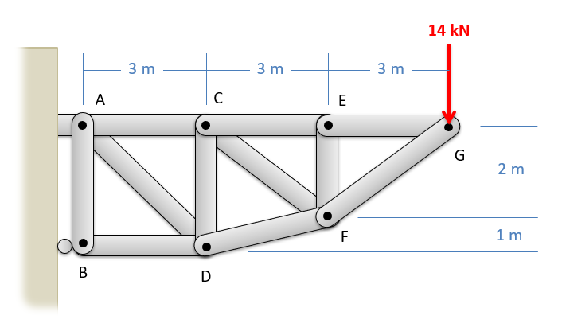
図のトラスは、A をピン、B をローラー（壁に水平方向の力を出す）で支えられ、G に 14 kN の鉛直下向きの力がかかる。切断法と節点法を併用して、部材 CE、CF、CD の力を求めよ。（寸法：AC＝CE＝EG＝3 m。F は G の水平 3 m 左で 2 m 下、D・B は上弦から 3 m 下。）
出典：Moore ほか, Mechanics Map, Chapter 5 Homework Problems, 問題 5.8（CC 表示・継承。PDF）。公式の答え（CE=21 kN T、CF=8.41 kN T、CD=4.67 kN C）と照合済み。解答は本教材の自作。
解答
① 戦略：反力は不要な側を使う。CE、CF、DF の3本を通る線で切り、右の部分（E、F、G。荷重 14 kN だけを含む）を取る。引張仮定で、右の部分に働く切り口の力は左向き（CE）、C 側（左上）向き（CF）、D 側（左下）向き（DF）。
② CE：CF と DF が通る点 F まわりのモーメント。CE は F より 2 m 上で左向き（反時計回り $+2F_{CE}$）、荷重（G は F の右 3 m、下向き）は時計回りで $-3\times14$： $$2\,F_{CE}-42=0\ \Rightarrow\ F_{CE}=21\ \text{kN（引張）}$$
③ CF：CE（$y=0$）と DF（D(3,−3)、F(6,−2) を通る）の作用線の交点 Q(12, 0) まわりのモーメントを使うと、CE と DF が消える。荷重（G は Q の左 3 m、下向き）は反時計回りで $+3\times14=42$。CF（引張仮定で F から C へ向かう向き $(-3,2)/\sqrt{13}=(-0.832,0.555)$、作用点 F は Q より $(-6,-2)$）のモーメントは $x F_y-y F_x=(-6)(0.555)-(-2)(-0.832)=-4.992$ に $F_{CF}$ を掛けたもの： $$42-4.992\,F_{CF}=0\ \Rightarrow\ F_{CF}=8.41\ \text{kN（引張）}$$ 〔なぜ Q を選ぶか：未知力のうち CE と DF の作用線が交わる点だから（注3）。2本が平行でないので、この点が存在する〕
④ CD：節点 C に移る。C には AC、CE、CD（鉛直）、CF が集まり、CE、CF は既知。C から A へ $(-1,0)$、E へ $(1,0)$、D へ $(0,-1)$、F へ $(0.832,-0.555)$。$y$：$-F_{CD}-0.555\times8.41=0\Rightarrow F_{CD}=-4.67$ kN。（$x$：$-F_{AC}+21+0.832\times8.41=0\Rightarrow F_{AC}=28.0$ kN。）
⑥ 答：CE＝21.0 kN（引張）、CF＝8.41 kN（引張）、CD＝4.67 kN（圧縮）。確かめ：全節点の連立方程式を数値で解いて、CE 21.000、CF 8.413、CD −4.667 ✓（B の反力は 42 kN）。
反力は対称で $R_{Ay}=R_C=P/2$、$R_{Ax}=0$。節点 A：$F_{AD}/\sqrt2+P/2=0\Rightarrow F_{AD}=-P/\sqrt2$（圧縮）、$F_{AB}=P/2$（引張）。B は荷重 $P$ を受け、AB と BC は一直線なので、$y$：$F_{BD}-P=0\Rightarrow F_{BD}=P$（引張）。節点 C は対称で $F_{CD}=-P/\sqrt2$（圧縮）、$F_{BC}=P/2$（引張）。
答：AB＝BC＝$P/2$（引張）、AD＝CD＝$P/\sqrt2$（圧縮）、BD＝$P$（引張）。零力部材はない（例題3では荷重が D にあったので BD が零力だったが、荷重が B に移ると BD が荷重を D へ吊り上げる）。確かめ：節点 D の $y$：$-(F_{AD}+F_{CD})/\sqrt2-F_{BD}=P-P=0$ ✓。
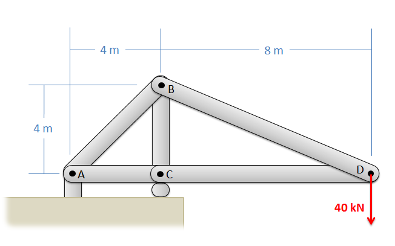
出典：Mechanics Map, Chapter 5 Homework Problems, 5.1（CC 表示・継承）。公式の答えは AB=113.14 kN（引張）、AC=80 kN（圧縮）、BC=120 kN（圧縮）、BD=89.44 kN（引張）、CD=80 kN（圧縮）で、本教材の数値計算と一致。解答の手順は自作。
全体：A まわり：$R_C\times4-40\times12=0\Rightarrow R_C=120$ kN（上）。$y$：$R_{Ay}=40-120=-80$ kN（下向き）。$x$：$R_{Ax}=0$。
節点 D（D から B へ $(-8,4)/\sqrt{80}=(-0.894,0.447)$、D から C へ $(-1,0)$、荷重 $(0,-40)$）：$y$：$0.447\,F_{BD}-40=0\Rightarrow F_{BD}=89.44$ kN（引張）。$x$：$-0.894\times89.44-F_{CD}=0\Rightarrow F_{CD}=-80$ kN（圧縮）。
節点 A（A から B へ $(1,1)/\sqrt2$、A から C へ $(1,0)$、反力 $(0,-80)$）：$y$：$F_{AB}/\sqrt2-80=0\Rightarrow F_{AB}=113.14$ kN（引張）。$x$：$113.14/\sqrt2+F_{AC}=0\Rightarrow F_{AC}=-80$ kN（圧縮）。
節点 C（C から A へ $(-1,0)$、C から B へ $(0,1)$、C から D へ $(1,0)$、反力 $(0,120)$）：$y$：$F_{BC}+120=0\Rightarrow F_{BC}=-120$ kN（圧縮）。$x$：$-F_{AC}+F_{CD}=80-80=0$ ✓。
A の鉛直反力が下向きになるのが要点（荷重が C から遠い右端 D にあり、てこのように A を引き下げる）。
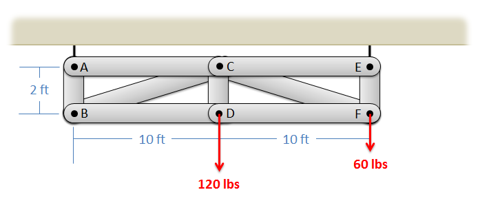
出典：Mechanics Map, Chapter 5 Homework Problems, 5.2（CC 表示・継承）。公式の答えと本教材の数値計算が一致。ケーブルは鉛直の力だけを出すので、水平方向の支持はないが、荷重が鉛直なので部材力は一意に決まる。
全体：A まわり：$T_E\times20-120\times10-60\times20=0\Rightarrow T_E=120$ lb、$T_A=180-120=60$ lb（ケーブルの力、上向き）。
節点 A（ケーブル 60 lb が上向き、AB は A から下向き $(0,-1)$、AC は水平 $(1,0)$）：$y$：$-F_{AB}+60=0\Rightarrow F_{AB}=60$（引張）。$x$：$F_{AC}=0$（T字の零力部材）。節点 E も同様に $F_{EF}=120$、$F_{CE}=0$。
節点 B（B から A へ $(0,1)$、D へ $(1,0)$、C へ $(10,2)/10.198=(0.981,0.196)$）：$y$：$60+0.196\,F_{BC}=0\Rightarrow F_{BC}=-305.9$（圧縮）。$x$：$F_{BD}+0.981\times(-305.9)=0\Rightarrow F_{BD}=300$（引張）。
節点 D（D から B へ $(-1,0)$、F へ $(1,0)$、C へ $(0,1)$、荷重 $(0,-120)$）：$y$：$F_{CD}-120=0\Rightarrow F_{CD}=120$（引張）。$x$：$-300+F_{DF}=0\Rightarrow F_{DF}=300$。
節点 F（F から D へ $(-1,0)$、E へ $(0,1)$、C へ $(-0.981,0.196)$、荷重 $(0,-60)$）：$x$：$-300-0.981F_{CF}=0\Rightarrow F_{CF}=-305.9$（圧縮）。$y$：$F_{EF}+0.196\times(-305.9)-60=0\Rightarrow F_{EF}=120$ ✓（E の結果と一致）。
答：AB 60（引張）、EF 120（引張）、CD 120（引張）、BD＝DF 300（引張）、BC＝CF 305.9（圧縮）、AC＝CE＝0（単位 lb）。
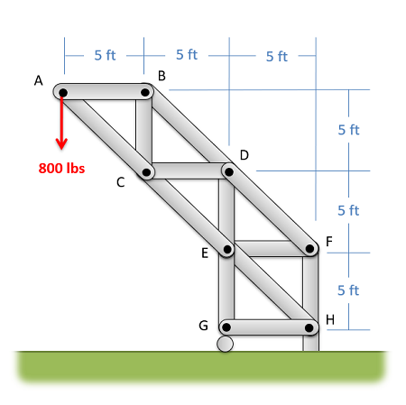
出典：Mechanics Map, 5.4 Method of Sections 例題4（CC 表示・継承）。公式の答え（AC=1131.4 lb 圧縮、BC=800 lb 圧縮、CD=800 lb 引張、CE=2262.7 lb 圧縮、BD=1131.4 lb 引張）と一致。図の節点座標は本教材が図から読んだもので、全節点の連立で公式値が再現できることで読みの正しさを確認した。
BD、CD、CE を通る線で切り、荷重 800 lb を含む上の部分（A、B、C）を取る（反力は不要）。引張を仮定すると、BD は B から D 向き $(1,-1)/\sqrt2$、CD は C から D 向き $(1,0)$、CE は C から E 向き $(1,-1)/\sqrt2$ に、この部分を引く。
C まわりのモーメント（CD、CE は C を通って消える）：BD の作用点 B は C の真上 5 ft、すなわち C から見て $(0,5)$。力は $0.7071F_{BD}\,(1,-1)$。モーメントは $x F_y-y F_x=0-5\times0.7071F_{BD}=-3.536F_{BD}$。荷重（A は C から見て $(-5,5)$、力 $(0,-800)$）は $(-5)(-800)=+4000$。
$$4000-3.536\,F_{BD}=0\ \Rightarrow\ F_{BD}=1131.4\ \text{lb（引張）}$$
$y$ の釣合い：$-0.7071F_{BD}-0.7071F_{CE}-800=0\Rightarrow F_{CE}=-1131.4-1131.4=-2262.7$ lb（圧縮）。$x$ の釣合い：$0.7071F_{BD}+F_{CD}+0.7071F_{CE}=0\Rightarrow F_{CD}=-0.7071(1131.4-2262.7)=+800$ lb（引張）。
節点 C（C から A へ $(-0.7071,0.7071)$、B へ $(0,1)$、D へ $(1,0)$、E へ $(0.7071,-0.7071)$）。CE の力は $(-1600,\,+1600)$、CD は $(800,0)$。$x$：$-0.7071F_{AC}+800-1600=0\Rightarrow F_{AC}=-1131.4$ lb（圧縮）。$y$：$0.7071F_{AC}+F_{BC}+1600=0\Rightarrow F_{BC}=-800$ lb（圧縮）。
答：BD＝1131.4 lb（引張）、CD＝800 lb（引張）、CE＝2262.7 lb（圧縮）、AC＝1131.4 lb（圧縮）、BC＝800 lb（圧縮）。
| 講義資料 | 本教材 |
|---|---|
| p.1 3・4 平面トラスの静解析（扉） | 序 |
| p.2 ロボットアームのトラス化の例 | 序、4章 |
| p.3 今日のポイント | 序 |
| p.4 トラスとは（定義、節点、仮定） | 1.1 |
| p.5 トラス構造をもつ機械の例（クレーン） | 写真の見開き（1.1）、1.1 の本文 |
| p.6 トラス構造とラーメン構造 | 1.1（注意） |
| p.7 トラスの問題（内力・反力、2つの解法） | 1.1、3.6 |
| p.8 3・4・1 節点法（特徴、未知数） | 2.1、1.2（導出） |
| p.9 解答の手順、符号の表 | 2.1、1.3 |
| p.10 問題の例 図3.20（教科書の解答） | 2.2（「お勧めしない方法」の囲み） |
| p.11–12 解答例（おすすめ） | 2.2 例題2 |
| p.13 別解（反力を先に） | 2.2 例題2（別解） |
| p.14 3・4・2 切断法（動機） | 3.1 |
| p.15 切断された部分も釣合う | 3.2 |
| p.16 解答の手順（切断法） | 3.3 |
| p.17–19 注1、注2、注3 | 3.3 |
| p.20–22 例 図3.21（教科書の解答・おすすめ） | 3.4 例題4 |
| p.23–26 練習問題 図3.25（節点法・切断法） | 3.5 例題5 |
| p.27–30 前半の目標・ポイントまとめ | まとめ・チェックリスト、次回の案内 |
| （資料にない：二力部材の導出、$m+r=2j$、零力部材、アームの数値例、外部問題） | 1.2、1.5、2.3、4章、5章（本教材の追加） |


.jpg){kind=link}